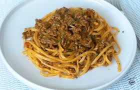

Mi Receta Favorita
🍝 Mi mejor receta: Pasta con carne picada y queso parmesano
En esta web te explico paso a paso cómo preparar una deliciosa
pasta con carne picada y queso parmesano, perfecta para cualquier día.
No puede faltar una pizca de perejil 🌿.
📝 Ingredientes
- Pasta
- Carne picada
- Tomate frito
- Ajo 🧄
- Aceite de oliva
- Sal
- Queso parmesano rallado 🧀
- Una pizca de perejil 🌿
👨🍳 Pasos para cocinar
- Hierve agua con sal en una olla.
- Añade la pasta y cuécela durante 8-10 minutos.
- En una sartén, sofríe el ajo con un poco de aceite.
- Añade la carne picada y cocínala hasta que esté bien hecha.
- Agrega el tomate frito y mezcla todo.
- Escurre la pasta y mézclala con la salsa.
- Sirve el plato y espolvorea queso parmesano y una pizca de perejil.
📸 Imágenes del plato


¡Y listo! Una receta sencilla, sabrosa y perfecta para compartir 😋